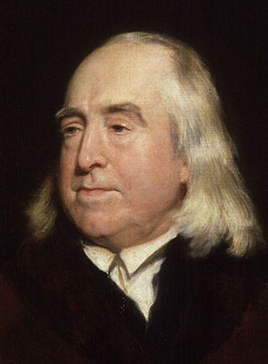

Who Was Jeremy Bentham?
Jeremy Bentham (1748–1832) was an English philosopher, jurist, social reformer, and the founder of classical utilitarianism. He became one of the most influential thinkers in modern moral and political philosophy because he argued that actions, laws, and institutions should be judged according to their consequences for human happiness.
The central principle of Jeremy Bentham's philosophy is often summarized as "the greatest happiness of the greatest number." Bentham believed that pleasure and pain play a fundamental role in human life and that moral and political decisions should aim to increase happiness and reduce unnecessary suffering.
Bentham applied utilitarian thinking far beyond personal morality. He wrote about law, punishment, prisons, democracy, education, economics, religion, political institutions, and social reform. His philosophy attempted to replace inherited traditions and vague moral principles with a systematic method for evaluating human actions and institutions.
Jeremy Bentham's influence can be seen in modern utilitarian ethics, legal positivism, welfare policy, political reform, and debates about public policy. His ideas also strongly influenced later philosophers, especially John Stuart Mill, who developed utilitarianism in a different and more complex direction.
Jeremy Bentham: Quick Facts
- Full name — Jeremy Bentham
- Born — February 15, 1748
- Died — June 6, 1832
- Nationality — British
- Philosophical tradition — British empiricism and classical utilitarianism
- Major fields — Ethics, political philosophy, philosophy of law, social reform
- Most famous theory — Utilitarianism
- Central principle — The greatest happiness principle
- Important idea — Pleasure and pain guide human action
- Important concept — Felicific or hedonic calculus
- Famous design — The Panopticon
- Major concern — Legal and political reform
- Influenced — John Stuart Mill and later utilitarian thinkers
Jeremy Bentham's Early Life and Education

Jeremy Bentham was born in London, England, in 1748, into a prosperous family. From an early age, he showed unusual intellectual ability and developed a strong interest in reading, language, law, and public affairs. His early education prepared him for a career within the established British legal system.
Bentham studied at Queen's College, Oxford, and later trained in law. However, his experience with legal education and legal institutions made him increasingly critical of the complexity and inconsistency of the British legal system. He came to believe that many laws survived because of tradition rather than because they genuinely benefited society.
Instead of becoming primarily a practicing lawyer, Bentham devoted much of his life to philosophical writing and proposals for reform. His work developed during a period of major political and intellectual change in Europe, when Enlightenment ideas encouraged criticism of inherited authority and demands for more rational institutions.
Bentham gradually developed the principle that would become the foundation of his philosophy: human beings are governed by pleasure and pain, and social institutions should be evaluated according to their effects on human well-being. This idea became the basis of his utilitarian ethics and his ambitious program of legal and political reform.
Why Is Jeremy Bentham Important?
Jeremy Bentham is important because he created one of the most influential moral theories in modern philosophy. Utilitarianism proposed that morality should not depend primarily on tradition, religious authority, social status, or abstract moral rules, but should consider the consequences of actions for human happiness and suffering.
Bentham also transformed discussions about law. He argued that legal systems should be examined critically and reformed when they produce unnecessary suffering or fail to serve the interests of society. His ideas contributed significantly to the development of modern debates about legal reform, codification, punishment, and public policy.
His political philosophy was similarly practical. Bentham supported reforms that could make governments and institutions more accountable to the people affected by their decisions. He criticized privileges based on tradition and argued that political arrangements should be evaluated according to their consequences rather than their age or historical prestige.
Bentham's influence extends into contemporary discussions about public policy and social welfare. Governments frequently face questions that resemble utilitarian problems: which policy will benefit the greatest number, reduce the greatest amount of suffering, or produce the best overall consequences for society?
Jeremy Bentham's Main Philosophical Ideas
1. The Principle of Utility
Bentham's most important philosophical principle is the principle of utility. According to this principle, actions and institutions should be judged by their tendency to produce pleasure or happiness and to prevent pain or suffering. Utility refers broadly to the capacity of something to promote well-being.
2. The Greatest Happiness Principle
Bentham believed that moral and political decisions should aim at the greatest happiness of the greatest number. The interests of society are connected with the interests of the individuals who make up that society, so a good policy should consider how its consequences affect the happiness and suffering of people.
3. Pleasure and Pain Govern Human Life
Bentham famously argued that human beings are placed under the governance of two sovereign masters: pleasure and pain. These forces influence what people desire, avoid, choose, and experience. Bentham believed that a realistic moral theory must therefore take human pleasure and suffering seriously.
4. Consequences Matter
Utilitarianism is a consequentialist theory because it evaluates actions largely according to their results. Bentham asked what an action actually produces rather than judging it only by the intention of the person performing it or by whether it follows an inherited moral rule.
5. Institutions Should Be Reformed Rationally
Bentham believed that laws, governments, prisons, and other institutions should not be protected simply because they are old. Human institutions can be examined, criticized, and redesigned according to their actual consequences for society and individual well-being.
What Is Jeremy Bentham's Utilitarianism?
Utilitarianism is the ethical theory most closely associated with Jeremy Bentham. In its classical form, utilitarianism holds that the morally right action is generally the action that produces the greatest overall balance of happiness over suffering for everyone affected.
Bentham's utilitarianism begins with individual experience. People experience pleasure and pain, seek things they find beneficial, and avoid things they experience as harmful. Bentham believed that these facts about human life provide a practical foundation for thinking about morality and social organization.
The theory is not simply a recommendation that each individual pursue personal pleasure without concern for others. Bentham's principle of utility requires consideration of the consequences for all those affected. A person's happiness matters, but so does the happiness of every other person involved.
Bentham therefore applied utilitarianism to collective decisions. A law, government policy, or institution should be evaluated by asking whether it increases overall well-being and reduces unnecessary suffering. This made utilitarianism especially influential in ethics, politics, economics, and public policy.
Jeremy Bentham and the Greatest Happiness Principle
The phrase "the greatest happiness of the greatest number" is closely associated with Jeremy Bentham and classical utilitarianism. It expresses the idea that morality and public policy should consider the overall happiness produced by an action rather than the interests of only a privileged minority.
The principle challenges moral systems that give special importance to social rank, inherited privilege, or tradition. From a utilitarian perspective, the suffering of an ordinary person matters morally, and institutions should consider the consequences of their decisions for all those affected.
Bentham's approach was particularly significant for political reform. Laws and institutions often benefit some groups while imposing costs on others, and utilitarian analysis asks whether those arrangements genuinely promote overall well-being or merely preserve existing interests.
The greatest happiness principle also creates difficult philosophical questions. How should happiness be measured? Can the happiness of one group be sacrificed for the greater benefit of another? These problems became central subjects of criticism and later developments within utilitarian philosophy.
Jeremy Bentham on Pleasure and Pain
Bentham's philosophy begins with the observation that human beings experience pleasure and pain. He regarded these experiences as fundamental facts of human motivation and moral life. People generally seek what they find pleasurable or beneficial and attempt to avoid suffering and harm.
This position is connected with hedonism, the view that pleasure has fundamental value and pain has fundamental disvalue. Bentham's moral philosophy therefore treats happiness as closely connected with the presence of pleasure and the absence of unnecessary suffering.
Bentham did not believe that moral philosophy should ignore the actual consequences of human experience. A law may sound noble or a tradition may appear respectable, but Bentham believed that philosophers should still ask whether it actually improves people's lives.
Pleasure and pain also provide the foundation for Bentham's attempt to make ethical reasoning more systematic. If actions have consequences that affect happiness, then it may be possible to compare and evaluate those consequences rather than relying entirely on personal intuition or inherited moral assumptions.
What Is Jeremy Bentham's Felicific Calculus?
The felicific calculus, also called the hedonic calculus, was Bentham's attempt to provide a systematic way of evaluating pleasures and pains. The idea is not that every moral decision can be solved through a simple mathematical formula, but that consequences can be examined through identifiable factors.
Bentham proposed considering characteristics such as the intensity of a pleasure or pain, its duration, its certainty, and how soon it is likely to occur. These factors could help a person think more carefully about the consequences produced by different actions.
He also considered whether a pleasure was likely to lead to additional pleasures, whether it was likely to be followed by pain, and how many people would be affected. The final factor, often called extent, is especially important because utilitarianism considers consequences for more than one individual.
The felicific calculus demonstrates Bentham's broader ambition to make moral and political reasoning more rational and systematic. Although philosophers have criticized the possibility of accurately measuring and comparing all pleasures, Bentham's approach remains historically important to consequentialist ethics.
Jeremy Bentham's Quantitative Hedonism
Bentham is often associated with quantitative hedonism. This means that pleasures are primarily distinguished according to measurable characteristics such as intensity, duration, certainty, and extent rather than according to an inherent hierarchy of higher and lower kinds of pleasure.
Bentham's famous position is often summarized by the idea that, when equal in quantity, one form of pleasure is not morally superior merely because it comes from a more intellectually respected activity. What matters for the utilitarian calculation is the actual amount of pleasure and pain involved.
This position later became an important point of disagreement between Bentham and John Stuart Mill's version of utilitarianism. Mill argued that pleasures can differ not only in quantity but also in quality and that intellectual and moral pleasures may have a higher character.
Bentham's quantitative approach reflects his commitment to moral equality. He attempted to avoid giving privileged status to pleasures simply because they were associated with a particular social class, cultural tradition, or intellectual activity.
Jeremy Bentham's Ethical Philosophy
In ethics, Bentham's central question is practical: what should human beings do? His answer directs attention toward the consequences of actions. A morally good action should tend to increase happiness or reduce suffering when the interests of all affected individuals are considered.
This approach differs from moral theories that treat certain actions as absolutely right or wrong regardless of consequences. Bentham did not deny that rules can be useful, but he believed that rules themselves should ultimately be justified by their tendency to promote human well-being.
Bentham also challenged moral judgments based entirely on personal feeling. A person may strongly approve or disapprove of something, but that reaction alone does not demonstrate that the action produces good or bad consequences for society.
His ethical philosophy therefore encourages impartiality. The happiness of one person should not automatically count more than the happiness of another because of wealth, social position, nationality, or inherited privilege. This principle became one of the most powerful and controversial aspects of utilitarian ethics.
Jeremy Bentham and Moral Decision-Making
Bentham's philosophy encourages people to examine the actual effects of their decisions. Before deciding whether an action is morally justified, a utilitarian asks who will benefit, who may suffer, how serious those consequences will be, and whether alternative actions could produce better results.
This makes utilitarian ethics particularly relevant to difficult practical situations. Medical decisions, public policy, environmental choices, criminal justice, and economic policy often affect large numbers of people and require some consideration of competing benefits and harms.
However, moral decision-making is rarely as simple as adding numbers. Consequences may be uncertain, different kinds of goods may be difficult to compare, and the interests of minorities may conflict with the interests of a larger majority.
These difficulties do not remove Bentham's central insight: moral reasoning should not ignore the real consequences of human actions. Bentham forced philosophers to ask whether moral theories genuinely improve human life or merely preserve rules whose practical effects have not been examined.
Jeremy Bentham's Political Philosophy
Jeremy Bentham applied utilitarian principles to politics by arguing that governments should be judged according to their effects on the people they govern. Political institutions do not deserve respect merely because they are traditional; they should demonstrate that they contribute to security, welfare, freedom, and overall well-being.
Bentham was deeply concerned with the problem of political power. Governments can pursue the interests of rulers or privileged groups rather than the interests of the wider population. Political reform was therefore necessary to make institutions more accountable.
His later political thought supported democratic reforms and greater public accountability. Bentham believed that political institutions should be designed in ways that reduce opportunities for corruption and encourage decision-makers to consider the interests of the people.
Bentham's political philosophy is important because it combines moral theory with institutional analysis. Rather than discussing justice only as an abstract ideal, he asked how governments, laws, voting systems, and public institutions could actually be organized to produce better consequences.
Jeremy Bentham, Democracy, and Political Reform
Bentham became an important supporter of political reform because he believed that governments should not remain controlled by narrow privileged interests. Political institutions should be evaluated by asking whether they genuinely represent and protect the interests of the people affected by their decisions.
He supported ideas associated with expanded political participation, accountability, and transparency. Bentham was suspicious of political arrangements that allowed officials to exercise power without adequate public scrutiny.
His concern with transparency can be understood through utilitarian reasoning. If public officials know that their actions can be examined and criticized, institutions may be less likely to serve purely private interests at the expense of the wider public.
Bentham's political thought contributed to the broader nineteenth- century movement for legal and democratic reform in Britain. Although not every one of his proposals was adopted, his philosophy encouraged systematic criticism of institutions that many people had previously accepted without serious examination.
Jeremy Bentham and the Philosophy of Law
Jeremy Bentham was one of the most important early modern thinkers on law and legal reform. He believed that laws should be clear, systematic, publicly understandable, and justified by their practical consequences for society.
Bentham strongly criticized the complexity of English common law. He believed that a legal system built gradually through scattered precedents could become difficult for ordinary citizens to understand and could preserve inconsistencies that no longer served a useful purpose.
His legal philosophy emphasized the importance of examining law as it actually exists rather than simply describing it through moral language. At the same time, Bentham believed that existing laws should be criticized and improved whenever they produced unnecessary harm.
Bentham's work helped shape later discussions about legal positivism, the view that the existence of law depends fundamentally on social and institutional facts rather than on whether the law is morally good. His influence can be seen in later legal thinkers such as John Austin.
Jeremy Bentham and Legal Reform
Legal reform was one of Bentham's lifelong concerns. He believed that laws should serve identifiable social purposes and that lawmakers should examine whether particular rules actually reduce harm and improve the conditions of human life.
Bentham criticized laws that survived only because of custom. A long tradition does not prove that an institution remains useful, and Bentham believed that societies should be willing to change laws when evidence shows that they create unnecessary suffering.
He also wanted law to be more accessible. Citizens should not need to depend entirely on specialists to understand the rules that govern their lives. Clear and organized laws could reduce uncertainty and make legal institutions more predictable.
Bentham's reforming spirit influenced later movements for the rationalization and codification of law. His work demonstrated that philosophy could be applied directly to practical institutions rather than remaining limited to purely theoretical questions.
Jeremy Bentham and the Codification of Law
Bentham strongly supported the codification of law, meaning the systematic organization of legal rules into a coherent written code. He believed that a rational legal system should make its principles and requirements as clear as possible.
Codification represented an alternative to a legal system that developed through numerous separate decisions and traditions. Bentham believed that scattered and highly technical laws could create confusion, uncertainty, and opportunities for manipulation.
A carefully designed legal code could, in Bentham's view, allow lawmakers to examine the purposes of laws directly. Rules could be organized around practical objectives such as security, property, welfare, and the reduction of harm.
Bentham's proposals for codification were ambitious and often extended beyond Britain. His influence contributed to the wider nineteenth- century belief that legal institutions could be deliberately redesigned through rational planning rather than simply inherited from the past.
Jeremy Bentham's Philosophy of Punishment
Bentham believed that punishment is itself an evil because it deliberately causes suffering. For this reason, punishment requires justification and should not be imposed simply because society wishes to take revenge on an offender.
From a utilitarian perspective, punishment may be justified only when it prevents a greater amount of suffering than it causes. Punishment might discourage crime, protect potential victims, prevent future offenses, or contribute to social security.
This approach requires careful attention to proportionality. Excessive punishment may create more suffering than is necessary to achieve its purpose. Bentham therefore opposed the idea that the severity of a punishment should be determined only by moral outrage.
His analysis remains important in contemporary debates about criminal justice. Questions about deterrence, rehabilitation, prison reform, proportional punishment, and the social consequences of imprisonment all involve problems that Bentham considered central to legal philosophy.
What Was Jeremy Bentham's Panopticon?
The Panopticon was a design for an institutional building proposed by Jeremy Bentham, most famously associated with a prison. The design was intended to allow a central observer to potentially monitor many individuals without those individuals always knowing when they were being watched.
Bentham believed that the possibility of observation could encourage discipline while reducing the number of guards required. The basic architectural principle involved visibility and the uncertainty of whether observation was occurring at any particular moment.
Bentham did not imagine the Panopticon only as a prison. He considered whether similar principles could be applied to other institutions such as schools, hospitals, and workplaces. This reflected his broader interest in designing institutions efficiently.
The Panopticon later became famous for a very different reason through the work of Michel Foucault. In Discipline and Punish, Foucault used Bentham's design as a model for understanding modern surveillance and disciplinary power.
Jeremy Bentham's Criticism of Natural Rights
Jeremy Bentham was highly critical of the doctrine of natural rights, the idea that human beings possess certain rights independently of laws and political institutions. Bentham believed that many claims about natural rights were expressed in vague language without sufficient practical foundations.
His most famous criticism described natural rights as "nonsense upon stilts." Bentham argued that rights become meaningful within systems of law because legal institutions establish and protect specific claims and obligations.
Bentham's position does not mean that he opposed all rights or all protections for individuals. Instead, he questioned whether rights could be justified simply by declaring them natural or self-evident. Rights, in his view, required practical and institutional justification.
His criticism remains controversial because modern human rights theory often depends on principles that Bentham rejected. The disagreement raises an important philosophical question: are rights grounded in human nature, moral principles, social agreements, or legal institutions?
Jeremy Bentham on Religion and Morality
Bentham was critical of the use of religious authority as the sole foundation for morality and political institutions. He believed that ethical and legal questions should be examined through their effects on human well-being rather than accepted simply because an authority declared a practice sacred or traditional.
His utilitarian philosophy therefore sought a secular basis for moral reasoning. The consequences of actions for happiness and suffering could, in principle, be examined by people regardless of their particular religious beliefs.
Bentham was especially concerned about situations in which religious or traditional institutions prevented useful reforms. If a practice caused unnecessary harm, he believed that its historical or religious status should not automatically protect it from criticism.
His position reflects a broader Enlightenment commitment to reason and critical inquiry. Moral and political institutions should be open to examination, and no tradition should be considered permanently immune from rational criticism.
Jeremy Bentham and Economics
Bentham's philosophy influenced economic thought because utilitarian ideas connect individual preferences with broader questions about social welfare. Economists and political thinkers became increasingly interested in how policies affect the well-being of individuals and populations.
His emphasis on pleasure, pain, incentives, and consequences was particularly relevant to later theories of economic behavior. Human beings often respond to expected benefits and costs, and institutions can influence behavior by changing those incentives.
Bentham did not create modern economics in its present form, but his utilitarian framework became highly influential in later discussions about welfare, policy, taxation, legislation, and the distribution of social benefits and burdens.
His connection with economics also demonstrates the broad scope of utilitarianism. The theory attempts to evaluate not only individual actions but also systems that influence the happiness, security, and material conditions of large numbers of people.
Jeremy Bentham's Influence on John Stuart Mill
John Stuart Mill became one of the most famous later utilitarian philosophers, and his intellectual development was strongly connected with Bentham's ideas. Mill's father, James Mill, was closely associated with the Benthamite movement and introduced Mill to utilitarian thought from an early age.
Mill accepted Bentham's basic commitment to the principle of utility but believed that Bentham's theory required important modifications. Mill argued that pleasures differ not only in quantity but also in quality.
This disagreement produced one of the most important developments in utilitarian philosophy. Bentham's approach is commonly described as quantitative, while Mill's version introduced a distinction between higher and lower pleasures.
Despite their differences, Bentham and Mill together established utilitarianism as one of the major traditions in modern ethics and political philosophy. Their work continues to shape contemporary debates about consequences, happiness, welfare, freedom, and social justice.
Jeremy Bentham's Major Works
An Introduction to the Principles of Morals and Legislation
Published in 1789, An Introduction to the Principles of Morals and Legislation is one of Bentham's most important philosophical works. The book presents the principle of utility and discusses pleasure, pain, punishment, legislation, and the systematic analysis of moral and legal questions.
Defence of Usury
In Defence of Usury, Bentham criticized restrictions on lending money at interest. The work demonstrates his willingness to challenge accepted economic and legal assumptions by examining their practical consequences rather than accepting traditional restrictions without question.
Panopticon
Bentham's writings on the Panopticon developed his proposal for a system of institutional observation and management. The project became one of the most famous examples of his attempt to apply rational design to practical social institutions.
Constitutional Code
Bentham also devoted considerable attention to political and constitutional reform. His writings on constitutional organization explored how political institutions could be structured to increase accountability and reduce the misuse of public power.
Jeremy Bentham's Legacy and Influence
Jeremy Bentham's greatest legacy is the establishment of utilitarianism as a major philosophical tradition. His insistence that consequences matter forced moral philosophers to confront practical questions about happiness, suffering, and the real effects of human decisions.
His influence on legal thought was also profound. Bentham encouraged lawyers and political reformers to examine whether laws actually serve useful social purposes. His work contributed to later developments in legal positivism, codification, criminal justice, and institutional reform.
Bentham also influenced the broader movement for democratic and social reform in nineteenth-century Britain. His ideas challenged inherited privileges and encouraged the belief that governments and institutions could be deliberately redesigned to serve human interests more effectively.
Today, Bentham's ideas remain relevant to philosophy, law, economics, public policy, artificial intelligence ethics, medicine, animal ethics, and political decision-making. Whenever people ask which policy will produce the best overall consequences, they are confronting a question deeply connected with the utilitarian tradition.
Jeremy Bentham and Animal Ethics
Jeremy Bentham is also remembered for an important contribution to the history of animal ethics. He argued that the ability to suffer is morally significant and challenged the idea that non-human animals can simply be ignored because they do not possess the same intellectual abilities as human beings.
Bentham's famous question was not primarily whether animals can reason or speak, but whether they can suffer. This argument expanded the utilitarian concern with pain beyond human beings and helped establish an important foundation for later philosophical arguments about animal welfare.
The principle has become particularly influential in modern ethical debates. If suffering is morally important, philosophers must consider whether the suffering of animals should be included when evaluating human practices and public policies.
Later thinkers such as Peter Singer developed arguments that drew significantly on utilitarian reasoning about animal suffering. Bentham's contribution therefore remains central to the historical development of modern animal ethics.
Criticisms of Jeremy Bentham's Philosophy
One major criticism of Bentham's utilitarianism concerns the difficulty of measuring happiness. Pleasure and suffering are subjective experiences, and philosophers question whether they can be compared precisely between different individuals in the systematic way Bentham hoped.
Another criticism concerns justice and individual rights. If the greatest happiness of the greatest number becomes the only moral standard, critics worry that the interests of a minority could theoretically be sacrificed when doing so benefits a larger group.
Bentham's quantitative approach to pleasure was also criticized by John Stuart Mill and others. Critics argue that intellectual, emotional, aesthetic, and moral experiences may differ in ways that cannot be understood merely by comparing their amount or intensity.
Finally, consequentialist reasoning can be difficult when the future is uncertain. People often cannot know all the consequences of their actions, especially when decisions affect large and complex societies. These criticisms led later philosophers to develop new versions of utilitarian and consequentialist ethics.
Jeremy Bentham vs. John Stuart Mill
Jeremy Bentham and John Stuart Mill are both central figures in the history of utilitarianism, but they developed the theory differently. Bentham focused primarily on the quantity of pleasure and pain produced by actions.
Mill accepted the importance of happiness but argued that some forms of pleasure are qualitatively superior to others. Intellectual, artistic, and moral pleasures could therefore possess a higher value than pleasures that are purely immediate or physical.
Bentham's philosophy was also strongly focused on institutional and legal reform. Mill expanded utilitarian thought into broader discussions about liberty, individuality, representative government, and the development of human character.
Their differences demonstrate that utilitarianism is not a completely fixed doctrine. The tradition developed through debate about what happiness means, how consequences should be measured, and how individual freedom and justice can be protected within a consequentialist moral framework.
Jeremy Bentham and Michel Foucault's Panopticon
Jeremy Bentham's Panopticon received renewed philosophical attention through the work of the twentieth-century French philosopher Michel Foucault. Although Bentham designed the Panopticon as a practical institutional proposal, Foucault used it as a powerful model for understanding modern disciplinary power.
In Discipline and Punish, Foucault argued that the possibility of constant observation can influence individuals to regulate their own behavior. The Panopticon therefore became associated with surveillance, visibility, discipline, and the internalization of social control.
This connection has made Bentham's architectural proposal one of the most recognizable concepts in modern social theory. Discussions about cameras, digital surveillance, data collection, workplaces, and institutions frequently refer to the Panopticon.
However, Bentham and Foucault approached the idea from very different perspectives. Bentham was interested in institutional efficiency and reform, while Foucault used the design critically to analyze broader structures of power and discipline within modern society.
Famous Jeremy Bentham Quotes
"Nature has placed mankind under the governance of two sovereign masters, pain and pleasure."
This statement expresses the foundation of Bentham's utilitarian philosophy. Human beings seek pleasure and attempt to avoid pain, so moral and political reasoning should consider how actions and institutions affect these fundamental experiences.
"It is the greatest happiness of the greatest number that is the measure of right and wrong."
This principle summarizes Bentham's belief that morality should consider overall human well-being. It became one of the defining formulations of classical utilitarianism and continues to influence consequentialist ethics.
"The question is not, Can they reason? nor, Can they talk? but, Can they suffer?"
Bentham's statement about animals became historically important because it shifted ethical attention toward the capacity for suffering. The idea later became central to modern arguments about animal welfare and the moral consideration of non-human beings.
Jeremy Bentham Timeline
1748 — Birth
Jeremy Bentham was born in London, England, on February 15, 1748.
1760s — Education and Legal Training
Bentham studied at Oxford and later trained in law, experiences that contributed to his growing criticism of the British legal system.
1776 — Early Major Work
Bentham published A Fragment on Government, an important early work that established his reputation as a critic of political and legal institutions.
1789 — Principles of Morals and Legislation
An Introduction to the Principles of Morals and Legislation presented many of the fundamental ideas associated with Bentham's utilitarian philosophy.
Late Eighteenth and Early Nineteenth Century — Reform Work
Bentham continued writing extensively about law, prisons, political institutions, democracy, economics, and social reform.
1832 — Death
Jeremy Bentham died on June 6, 1832, leaving behind an enormous body of philosophical and reformist writing that continued to influence later generations.
Why Is Jeremy Bentham Still Relevant Today?
Jeremy Bentham remains relevant because modern societies constantly make decisions involving competing benefits and harms. Governments, courts, hospitals, businesses, and individuals frequently need to consider which actions will produce the best overall consequences.
Public policy provides a clear example. Decisions about healthcare, education, taxation, environmental protection, transportation, and criminal justice can affect millions of people. Utilitarian reasoning offers one way of examining those consequences systematically.
Bentham's concern with transparency and institutional accountability is also highly relevant. Modern debates about government secrecy, surveillance, corruption, data collection, and public oversight all involve questions about how power should be organized and controlled.
Although few philosophers accept every aspect of Bentham's original theory, his central challenge remains powerful: moral and political systems should be judged not only by their intentions or traditions but also by what they actually do to the lives of human beings.
Frequently Asked Questions About Jeremy Bentham
Who was Jeremy Bentham?
Jeremy Bentham was an English philosopher, jurist, and social reformer who lived from 1748 to 1832. He is best known as the founder of classical utilitarianism and for his influential ideas about ethics, law, punishment, political reform, and the greatest happiness principle.
What is Jeremy Bentham famous for?
Jeremy Bentham is famous for utilitarianism, the greatest happiness principle, the principle of utility, the felicific calculus, legal reform, and the Panopticon. He was one of the most influential philosophers of ethics and the philosophy of law.
What was Jeremy Bentham's philosophy?
Jeremy Bentham's philosophy was based on utilitarianism. He argued that actions and institutions should be judged according to their consequences for happiness and suffering and should aim to promote the greatest overall well-being.
What is utilitarianism according to Jeremy Bentham?
According to Bentham, utilitarianism is the principle that actions and policies should be evaluated by their tendency to produce pleasure or happiness and reduce pain or suffering. The interests of all affected individuals should be considered.
What is the greatest happiness principle?
The greatest happiness principle is the idea that the morally right action or policy should aim to produce the greatest overall happiness. It is one of the central principles associated with Bentham's utilitarian philosophy.
What is the felicific calculus?
The felicific calculus is Bentham's proposed method for evaluating pleasures and pains by considering factors such as intensity, duration, certainty, and the number of people affected by an action.
What was Jeremy Bentham's Panopticon?
The Panopticon was Bentham's design for an institution, especially a prison, in which individuals could potentially be observed from a central position. The design later became famous through Michel Foucault's analysis of surveillance and disciplinary power.
What did Jeremy Bentham think about natural rights?
Bentham strongly criticized the idea of natural rights existing independently of law. He believed that rights require practical and institutional foundations and rejected declarations of rights that he considered vague or unsupported by legal reality.
How did Jeremy Bentham influence John Stuart Mill?
Bentham established the utilitarian tradition that strongly influenced John Stuart Mill. Mill accepted the principle of utility but modified Bentham's theory by arguing that pleasures differ not only in quantity but also in quality.
Why is Jeremy Bentham important today?
Bentham remains important because utilitarian reasoning continues to influence ethics, economics, public policy, law, animal ethics, and political decision-making. His work encourages people to examine the actual consequences of institutions and policies for human well-being.
Related Enlightenment and Modern Philosophers
Explore other major philosophers connected with Enlightenment philosophy, political theory, freedom, democracy, social contract theory, morality, and modern thought.
Jeremy Bentham's Philosophy and Lasting Importance
Jeremy Bentham was one of the great reforming philosophers of the modern world. His philosophy began with a simple but powerful question: what are the real consequences of human actions and institutions for happiness and suffering?
From this question, Bentham developed utilitarianism into a broad philosophical framework. He applied the principle of utility to morality, law, punishment, political institutions, economics, prisons, and social reform, demonstrating that philosophical ideas could be directly connected with practical problems.
Bentham's theory has been criticized for the difficulty of measuring happiness and for possible conflicts between overall welfare and individual rights. Nevertheless, these criticisms demonstrate the continuing importance of the questions he raised rather than making those questions disappear.
The lasting significance of Jeremy Bentham's philosophy lies in its demand that human institutions justify themselves through their effects on real lives. His commitment to reducing suffering, increasing well-being, and critically examining inherited systems continues to make him one of the most important philosophers in the history of ethics, law, and political thought.
Explore Great Philosophers